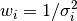
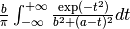
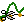

Data¶
Loading Data¶
Data files are read using the xylib library.
In the GUI
click . If it just works for your files, you may go straight to Active and Inactive Points.
Points are loaded from files using the command:
dataslot < filename[:xcol:ycol:scol:block] [filetype options...]
where
dataslot should be replaced with
@0, unless many datasets are to be used simultaneously (for details see: Working with Multiple Datasets),xcol, ycol, scol (supported only in text and CSV files) are columns corresponding to x, y and std. dev. of y. Column 0 means index of the point: 0 for the first point, 1 for the second, etc.
block - selects one or more blocks of data from a multi-block file such as VAMAS
filetype usually can be omitted, because in most of the cases the filetype can be detected; the list of supported filetypes is at the end of this section
options depend on a filetype and usually are omitted
If the filename contains blank characters, a semicolon or comma, it should be put inside single quotation marks (together with colon-separated indices, if any).
A few examples should clarify it:
@0 < foo.vms
@0 < 'foo.vms' # filename can be quoted
@0 < foo.fii text first_line_header # with filetype options
@0 < foo.csv:1:4:: # x,y - 1st and 4th columns
@0 < foo.csv:1:2:3: # read std. dev. of y from 3rd column
@0 < foo.csv:0:1:: # x - index (0,1,2,...), y - first column
@0 < foo.raw::::0,1 # load two first blocks of data (as one dataset)
You may also specify multiple y columns.
It will load each x/y pair as a separate dataset.
In this case you need to use @+ < ... (@+ denotes new dataslot):
@+ < foo.csv:1:3,4:: # load two dataset (with y in columns 3,4)
@+ < foo.csv:1:3..5:: # load three dataset (with y in columns 3,4,5)
@+ < foo.csv:1:4..6,2:: # load four dataset (y: 4,5,6,2)
@+ < foo.csv:1:2..:: # load 2nd and all the next columns as y
Information about loaded data can be obtained with:
info data
Supported Filetypes¶
- text
ASCII text, multicolumn numeric data. The details are given in the next section.
- csv
CSV or TSV file. Similar to text but supports quoted (
") values and uses different heuristic to interpret ambiguous cases.- dbws
format used by DBWS (program for Rietveld analysis) and DMPLOT.
- canberra_cnf
Canberra CNF format
- cpi
Sietronics Sieray CPI format
- uxd
Siemens/Bruker UXD format (powder diffraction data)
- bruker_raw
Simens-Bruker RAW format (version 1,2,3)
- rigaku_dat
Rigaku dat format (powder diffraction data)
- vamas
VAMAS ISO-14976 (only experiment modes: “SEM” or “MAPSV” or “MAPSVDP” and only “REGULAR” scan mode are supported)
- philips_udf
Philips UDF (powder diffraction data)
- philips_rd
Philips RD raw scan format V3 (powder diffraction data)
- spe
Princeton Instruments WinSpec SPE format (only 1-D data is supported)
- pdcif
CIF for powder diffraction
And a few others. The full list is available at: http://xylib.sourceforge.net/.
Reading Text Files¶
The xylib library can read TSV or CSV formats (tab or comma separated values). In fact, the values can be separated by any whitespace character or by one of ,;: punctations, or by any combination of these.
Empty lines and comments that start with hash (#) are skipped.
Since there is a lot of files in the world that contain numeric data mixed
with text, unless the strict option is given
any text that can not be interpreted as a number is regarded a start of
comment (the rest of the line is ignored).
Note that the file is parsed regardless of blocks and columns specified by the user. The data read from the file are first stored in a table with m columns and n rows. If some of the lines have 3 numbers in it, and some have 5 numbers, we can either discard the lines that have 3 numbers or we can discard the numbers in 4th and 5th column. Usually the latter is done, but there are exceptions. The shorter lines are ignored
if it is the last line in the file (probably the program was terminated while writing the file),
if it contains only one number, but the prior lines had more numbers (this may be a comment that starts with a number)
if all the (not ignored) prior lines and the next line are longer
These rule were introduced to read free-format log files with textual comments inserted between lines with numeric data.
For now, xylib does not handle well nan’s and inf’s in the data.
Data blocks and columns may have names. These names are used to set
a title of the dataset (see Working with Multiple Datasets for details).
If the option first_line_header is given and the number of words
in the first line is equal to the number of data columns,
each word is used as a name of corresponding column.
If the number of words is different, the first line is used as a name of the
block.
If the last_line_header option is given, the line preceding
the first data line is used to set either column names or the block name.
If the file starts with the “LAMMPS (” string,
the last_line_header option is set automatically.
This is very helpful when plotting data from LAMMPS log files.
Active and Inactive Points¶
We often have the situation that only a part of the data from a file is of interest. In Fityk, each point is either active or inactive. Inactive points are excluded from fitting and all calculations. (Since active points do not need to be in one region, we do not use the region of interest term here, but such region can be easy selected). A data transformation:
A = boolean-condition
can be used to change the state of points.
In the GUI
data points can be activated and disactivated with mouse in the data-range mode (toolbar: ).
Standard Deviation (or Weight)¶
When fitting data, we assume that only the y coordinate is subject to statistical errors in measurement. This is a common assumption. To see how the y’s standard deviation, σ, influences fitting (optimization), look at the weighted sum of squared residuals formula in Nonlinear Optimization. We can also think about weights of points – every point has a weight assigned, that is equal .
Standard deviation of points can be
read from file together with the x and y
coordinates. Otherwise, it is set either to max(y1/2, 1)
or to 1, depending on the default_sigma option.
Setting std. dev. as a square root of the value is common
and has theoretical ground when y is the number of independent events.
You can always change the standard deviation, e.g. make it equal for every
point with the command: S=1.
See Data Point Transformations for details.
Note
It is often the case that user is not sure what standard deviation should be assumed, but it is her responsibility to pick something.
Data Point Transformations¶
Every data point has four properties: x coordinate, y coordinate,
standard deviation of y and active/inactive flag.
These properties can be changed using symbols X, Y, S and A,
respectively. It is possible to either change a single point or apply
a transformation to all points. For example:
Y[3]=1.2assigns the y coordinate of the 4th point (0 is first),Y = -ychanges the sign of the y coordinate for all points.
On the left side of the equality sign you can have one of symbols X, Y,
S, A, possibly with the index in brackets. The symbols on the left
side are case insensitive.
The right hand side is a mathematical expression that can have special variables:
lower case letters
x,y,s,arepresent properties of data points before transformation,upper case
X,Y,S,Astand for the same properties after transformation,Mstands for the number of points.nstands for the index of currently transformed point, e.g.,Y=y[M-n-1]means that n-th point (n=0, 1, … M-1) is assigned y value of the n-th point from the end.
Before the transformation a new array of points is created as a copy of the
old array.
Operations are applied sequentially from the first point to the last one,
so while Y[n+1] and y[n+1] have always the same value,
Y[n-1] and y[n-1] may differ. For example, the two commands:
Y = y[n] + y[n-1]
Y = y[n] + Y[n-1]
differ. The first one adds to each point the value of the previous point.
The second one adds the value of the previous point after transformation,
so effectively it adds the sum of all previous points.
The index [n] could be omitted (Y = y + y[n-1]).
The value of undefined points, like y[-1] and Y[-1],
is explained later in this section.
Expressions can contain:
real numbers in normal or scientific format (e.g.
1.23e5),constants
pi,true(1),false(0)binary operators:
+,-,*,/,^,boolean operators:
and,or,not,comparisions:
>,>=,<,<=,==,!=.one argument functions:
sqrtexplog10lnsincostansinhcoshtanhatanasinacoserferfcgammalgamma(=ln(|gamma()|))absround(rounds to the nearest integer)
two argument functions:
mod(modulo)min2max2(max2(3,5)gives 5),randuniform(a, b)(random number from interval (a, b)),randnormal(mu, sigma)(random number from normal distribution),voigt(a, b)= 
ternary
?:operator:condition ? expression1 : expression2, which returns expression1 if condition is true and expression2 otherwise.
A few examples.
The x scale of diffraction pattern can be changed from 2θ to Q:
X = 4*pi * sin(x/2*pi/180) / 1.54051 # Cu 2θ -> QNegative y values can be zeroed:
Y = max2(y, 0)
All standard deviations can be set to 1:
S = 1
It is possible to select active range of data:
A = x > 40 and x < 60 # select range (40, 60)
All operations are performed on real numbers. Two numbers that differ less than ε (the value of ε is set by the option epsilon) are considered equal.
Points can be created or deleted by changing the value of M.
For example, the following commands:
M=500; x=n/100; y=sin(x)
create 500 points and generate a sinusoid.
Points are kept sorted according to their x coordinate. The sorting is performed after each transformation.
Note
Changing the x coordinate may change the order and indices of points.
Indices, like all other values, are computed in the real number domain. If the index is not integer (it is compared using ε to the rounded value):
x,y,s,aare interpolated linearly. For example,y[2.5]is equal to(y[2]+[3])/2. If the index is less than 0 or larger than M-1, the value for the first or the last point, respectively, is returned.For
X,Y,S,Athe index is rounded to integer. If the index is less than 0 or larger than M-1, 0 is returned.
Transformations separated by commas (,) form a sequance of transformations.
During the sequance, the vectors x, y, s and a that contain
old values are not changed. This makes possible to swap the axes:
X=y, Y=x
The special index(arg) function returns the index of point that has
x equal arg, or, if there is no such point, the linear interpolation
of two neighbouring indices. This enables equilibrating the step of data
(with interpolation of y and σ):
X = x[0] + n * (x[M-1]-x[0]) / (M-1), Y = y[index(X)], S = s[index(X)]
It is possible to delete points for which given condition is true,
using expression delete(condition):
delete(not a) # delete inactive points
# reduce twice the number of points, averaging x and adding y
x = (x[n]+x[n+1])/2
y = y[n]+y[n+1]
delete(mod(n,2) == 1)
If you have more than one dataset, you may need to specify to which dataset the transformation applies. See Working with Multiple Datasets for details.
The value of a data expression can be shown using the print command.
The precision of printed numbers is governed by the
numeric_format option.
print M # the number of points
print y[index(20)] # value of y for x=20
Aggregate Functions¶
Aggregate functions have syntax:
aggregate(expression [if condition])
and return a single value, calculated from values of all points for which the given condition is true. If the condition is omitted, all points in the dataset are taken into account.
The following aggregate functions are recognized:
min()— the smallest value,max()— the largest value,argmin()— (stands for the argument of the minimum)the x value of the point for which the expression in brackets has the smallest value,
argmax()— the x value of the point for which the expressionin brackets has the largest value,
sum()— the sum,count()— the number of points for which the expression is true,avg()— the arithmetic mean,stddev()— the standard deviation,centile(N, )— percentiledarea()— a function used to normalize the area (see the example below). It returns the sum of expression*(x[n+1]-x[n-1])/2. In particular,darea(y)returns the interpolated area under data points.
Examples:
p avg(y) # print the average y value
p centile(50, y) # print the median y value
p max(y) # the largest y value
p argmax(y) # the position of data maximum
p max(y if x > 40 and x < 60) # the largest y value for x in (40, 60)
p max(y if a) # the largest y value in the active range
p min(x if y > 0.1)] # x of the first point with y > 0.1
p count(y>100) # the number of points that have y above 100
p count(y>avg(y)) # aggregate functions can be nested
p y[min(n if y > 100)] # the first (from the left) value of y above 100
# take the first 2000 points, average them and subtract as background
Y = y - avg(y if n<2000)
Y = y / darea(y) # normalize data area
# make active only the points on the left from the first
# point with y > 0.1
a = x < min(x if y > 0.1)]
Functions and Variables in Data Transformation¶
You may postpone reading this section and read about the Models first.
Variables ($foo) and functions (%bar) can be used in data expressions:
Y = y / $foo # divides all y's by $foo
Y = y - %f(x) # subtracts function %f from data
Y = y - @0.F(x) # subtracts all functions in F
# print the abscissa value of the maximum of the model
# (only the values in points are considered,
# so it's not exactly the model's maximum)
print argmax(F(x))
# print the maximum of the sum of two functions
print max(%_1(x) + %_2(x))
# Fit constant x-correction (i.e. fit the instrumental zero error), ...
Z = Constant(~0)
fit
X = x + Z(x) # ... correct the data
Z = 0 # ... and remove the correction from the model.
In the GUI
in the Baseline Mode (),
functions Spline and Polyline
are used to subtract manually selected background.
Clicking  results in a command like this:
%bg0 = Spline(14.2979,62.1253, 39.5695,35.0676, 148.553,49.9493)
Y = y - %bg0(x)
Clicking the same button again undoes the subtraction:
Y = y + %bg0(x)
The function edited in the Baseline Mode is always named %bgX,
where X is the index of the dataset.
Values of the function parameters (e.g. %fun.a0) and pseudo-parameters
Center, Height, FWHM, IB and Area (e.g. %fun.Area)
can also be used. IB stands for Integral Breadth – width of rectangle with
the same area and height as the peak, in other words Area/Height.
Not all functions have pseudo-parameters.
It is also possible to calculate some properties of %functions:
%f.numarea(x1, x2, n)gives area integrated numerically from x1 to x2 using trapezoidal rule with n equal steps.%f.findx(x1, x2, y)finds x in interval (x1, x2) such that %f(x)=y using bisection method combined with Newton-Raphson method. It is a requirement that %f(x1) < y < %f(x2).%f.extremum(x1, x2)finds x in interval (x1, x2) such that %f’(x)=0 using bisection method. It is a requirement that %f’(x1) and %f’(x2) have different signs.
A few examples:
print %fun.findx(-10, 10, 0) # find the zero of %fun in [-10, 10]
print F.findx(-10, 10, 0) # find the zero of the model in [-10, 10]
print %fun.numarea(0, 100, 10000) # shows area of function %fun
print %_1(%_1.extremum(40, 50)) # shows extremum value
# calculate FWHM numerically, value 50 can be tuned
$c = {%f.Center}
p %f.findx($c, $c+50, %f.Height/2) - %f.findx($c, $c-50, %f.Height/2)
p %f.FWHM # should give almost the same.
Working with Multiple Datasets¶
Let us call a set of data that usually comes from one file –
a dataset. It is possible to work simultaneously with multiple datasets.
Datasets have numbers and are referenced by @ with the number,
(e.g. @3).
The user can specify which dataset the command should be applied to:
@0: M=500 # change the number of points in the first dataset
@1 @2: M=500 # the same command applied to two datasets
@*: M=500 # and the same applied to all datasets
If the dataset is not specified, the command applies to the default dataset,
which is initially @0. The use command changes the default dataset:
use @2 # set @2 as default
To load dataset from file, use one of the commands:
@n < filename:xcol:ycol:scol:block filetype options...
@+ < filename:xcol:ycol:scol:block filetype options...
The first one uses existing data slot and the second one creates
a new slot. Using @+ increases the number of datasets,
and the command delete @n decreases it.
The dataset can be duplicated (@+ = @n) or transformed,
more on this in the next section.
Each dataset has a separate model, that can be fitted to the data. This is explained in the next chapter.
Each dataset also has a title (it does not have to be unique, however). When loading file, a title is automatically created:
if there is a name associated with the column ycol, the title is based on it;
otherwise, if there is a name associated with the data block read from file, the title is set to this name;
otherwise, the title is based on the filename
Titles can be changed using the command:
@n: title = 'new-title'
To print the title of the dataset, type @n: info title.
Dataset Transformations¶
There are a few transformations defined for a whole dataset
or for two datasets. The syntax is @n = ... or @+ = ....
The the right hand side expression supports the following operations:
-@nnegation of all y values,
d * @n(e.g.
0.4*@0) y values are multiplied by d,@n + @mreturns
@nwith added y values from interpolated@m,@n - @mreturns
@nwith subtracted y values from interpolated@m,@n and @mreturns points from both datasets (re-sorted),
and functions:
sum_same_x(@n)Merges points which have distance in x is smaller than epsilon. x of the merged point is the average, and y and σ are sums of components.
avg_same_x(@n)The same as
sum_same_x, but y and σ are set as the average of components.shirley_bg(@n)Calculates Shirley background (useful in X-ray photoelectron spectroscopy).
Examples:
@+ = @0 # duplicate the dataset
@+ = @0 and @1 # create a new dataset from @0 and @1
@0 = @0 - shirley_bg(@0) # remove Shirley background
@0 = @0 - @1 # subtract @1 from @0
@0 = @0 - 0.28*@1 # subtract scaled dataset @1 from @0
Exporting Data¶
Command:
print all: expression, ... > file.tsv
can export data to an ASCII TSV (tab separated values) file.
In the GUI
To export data in a 3-column (x, y and standard deviation) format, use:
print all: x, y, s > file.tsv
Any expressions can be printed out:
p all: n+1, x, y, F(x), y-F(x), %foo(x), sin(pi*x)+y^2 > file.tsv
It is possible to select which points are to be printed by replacing all
with if followed by a condition:
print if a: x, y # only active points are printed
print if x > 30 and x < 40: x, y # only points in (30,40)
The option numeric_format controls the format and precision of all numbers.